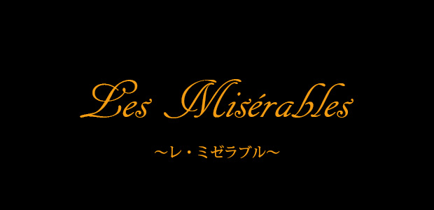

今年に入ってから小学生に授業をすることが多い私。今月はヴィクトル・ユゴーの『レ・ミゼラブル』を扱っています。塾の講師にしても学校の先生にしても、毎年似たようなカリキュラムで授業をするため、何年もやっていると惰性になってしまうことは多々あります。同じ作品を５回も１０回も授業していると、何を話すべきか、何を考えさせるべきか、授業のポイントがルーチン化し、極言してしまえば何も考えずに「こなす」ことができるようになります。そうならないために毎年新たな視点を考えているのですが、今年の『レ・ミゼラブル』は例年にましてグッときました。
レ・ミゼラブルといえば幾度となく映画やミュージカルになっている名作中の名作。物語の構成自体がとても秀逸で、理屈抜きで感動を誘う仕掛けに充ち満ちています。主人公のジャン・バルジャンがミリエル神父に救われ、善の精神に目覚める場面など、裏に込められた様々なメッセージを承知していながら、どうしても涙腺が緩んでしまう…。登場人物も多く時系列も複雑で、かつ感動を誘う仕掛けに満ちていることもあって、小学生を対象に授業をする場合、授業はどうしてもあらすじを追うことが中心になりがちです。
『レ・ミゼラブル』（Les Misérables）は、ヴィクトル・ユーゴーが1862年に執筆したロマン主義フランス文学の大河小説。原題 Les Misérables は、「悲惨な人々」「哀れな人々」を意味する。1本のパンを盗んだために19年間もの監獄生活を送ることになったジャン・ヴァルジャンの生涯を描く作品である。作品中ではナポレオン1世没落直後の1815年からルイ18世・シャルル10世の復古王政時代、七月革命後のルイ・フィリップ王の七月王政時代の最中の1833年までの18年間を描いており、さらに随所でフランス革命、ナポレオンの第一帝政時代と百日天下、二月革命とその後勃発した六月暴動の回想・記憶が挿入される。当時のフランスを取り巻く社会情勢や民衆の生活も、物語の背景として詳しく記載されている。
レ・ミゼラブル Wikipedia
しかし、レ・ミゼラブルの面白さは筋以外にもたくさんあります。19世紀フランス、より広くいえば西欧「近代」の思想そのものが描写の各所にちりばめられているため、じっくり読むと、現代の私たちが生きる社会の特異性を浮かび上がらせることができるのです。私たちが当たり前のものとして持っている観念がいかに「特殊なもの」であり、人々がそれを手に入れるまでどれほど長い年月をかけてきたのかを痛感します。たとえば「平等」という観念一つとっても、当時のそれと現在のそれは明らかに異なります。フランス革命を経た当時のフランスにあっても社会的身分は厳然と存在し、それに基づく差別も至極当たり前のものでした。日本国憲法に述べられる基本的人権のようなものも建前上の存在に過ぎず、すべてが完全な「自己責任」の世界です。一度社会のレールから足を踏み外した人々を救済するセイフティネットはほぼ存在しないのです。病気で働けなくなったらそれでおしまいです。
小学生の授業で使っているテキストは子供向けにリライトしたものなので、原作にあるような作者の長大な意見陳述部はすべて省かれています。しかし、それでもなお、情景描写や心情描写の中に潜む、背筋が寒くなるような世界観は心に刺さります。私自身つい最近病気をしたからかもしれませんが、とても身につまされました。
国語の小説読解では、キャラクタの心情把握に重点が置かれる傾向があります。そして、心情把握の根拠となるのは、登場人物相互の関係性や情景描写です。「ここでAがこういったから、Bはこう考えている」という因果の関係をしっかりと読めることが重視されています。もちろん入試問題を解くことに絞れば、そこが最も大切です。しかし、小説を読む醍醐味はそれ以外にもたくさんあります。わずかな情景描写の文言からその世界観を読み取っていく面白さ、小説の世界にすっぽりと包み込まれる不思議な感覚を得ることもまた重要でしょう。小学生だからこそ、点数に還元できない読み方を学んでほしいと思います。